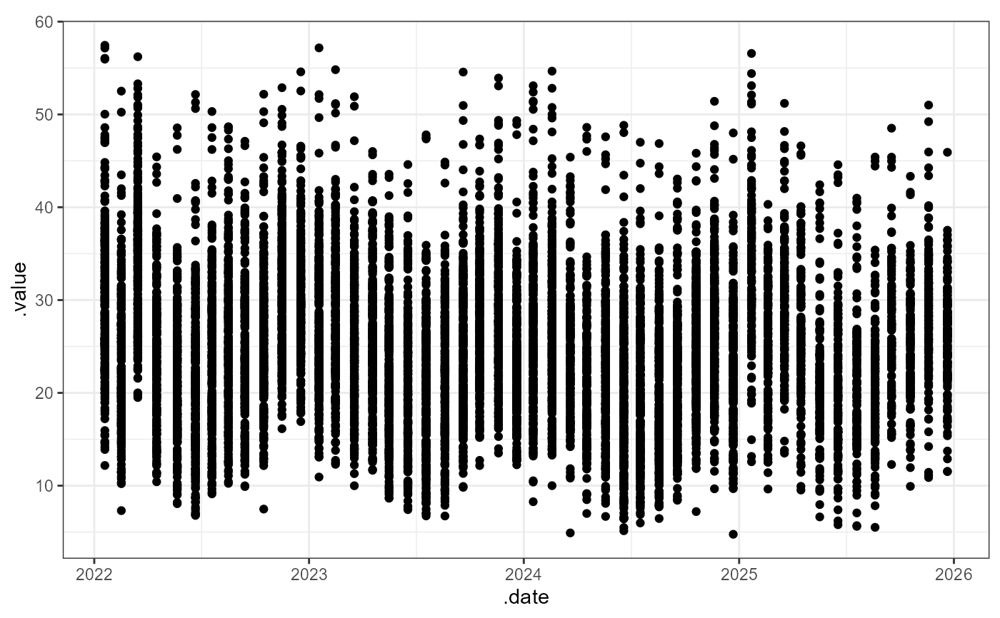

tube.plots.RdDTEval uses ggplot2 to generate most plots.
Obviously, you are welcome to use any graphics package you know to generate
your own plot. In fact, if you want really fine control of plot outputs, we
recommend taking the time to learn a graphics package like
ggplot, lattice, etc. But DTEval also includes
several quick-use wrappers for some commonly used plot types and useful
options like grouping and faceting, which can really help with data
visualisation. It also includes tubePlot, which builds
common plot shells for many of these, and handles some of of
the generic plot control for functions like testTubePrecision
and testTubePrecision.
tubePlot(data, x = NULL, y = NULL, plot.type = NULL, ...)
tubeTimePlot(data, x = NULL, y = NULL, ...)Data source, typically a data.frame or similar, to be used to build a plot using ggplot2.
The names of the data-series to plot on the
X and Y axes, respectively, and assumed to be elements of data.
The type of plot(s) to produce, e.g.:
'point' (default) for a scatter plot, 'box' for
a box and whiskers plot, etc...
Additional arguments. See details below.
tubePlot is a general purpose plotting functions for
diffusion tube data.
tubeTimePlot is a tubePlot wrapper that adds the tagged
sampling date as a second axes if one of x or y is
supplied.
In addition to data, the main data source for
the plots, tubePlot also handles the following common
plot arguments:
xlab, ylab The X and Y axes labels to use if
different from plot defaults.
group The name of the data-series to use to group
plotted data with.
facet The name of the data-series to use to cut
the data by when generating multiple plot panels. Also provides
an addition facet.type shortcut to different ggplot2
facet options: 'wrap' for facet_wrap (default),
'grid' for facet_grid (or 'grid.row' or grid.col' to
specific by row-then-column or column-then-row grid handling,
respectively).
The plots also apply some intuitive reasoning, e.g. the
argument point.col='red' is equivalent to
plot.type='point' and col='red' but only applies
that colour to points if other plot types are requested in
the same call.
Functions like tubeTimePlot and tubeMap are
wrappers that provide short-cuts to build commonly used
plots.
Maybe I'm already missing qplot...
# basic example
tubePlot(dt.brd, ".date", ".value")

if (FALSE) { # \dontrun{
# by-site line plot
tubePlot(dt.brd, ".date", ".value",
plot.type="line", group="site")
# by-month smooth
# with line colour and fill
tubePlot(dt.brd, ".date", ".value",
plot.type="smooth", group=".month",
col=".month", fill=".month")
} # }